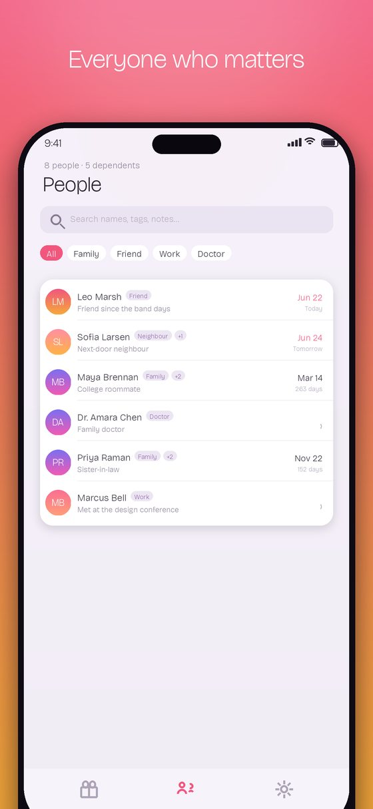
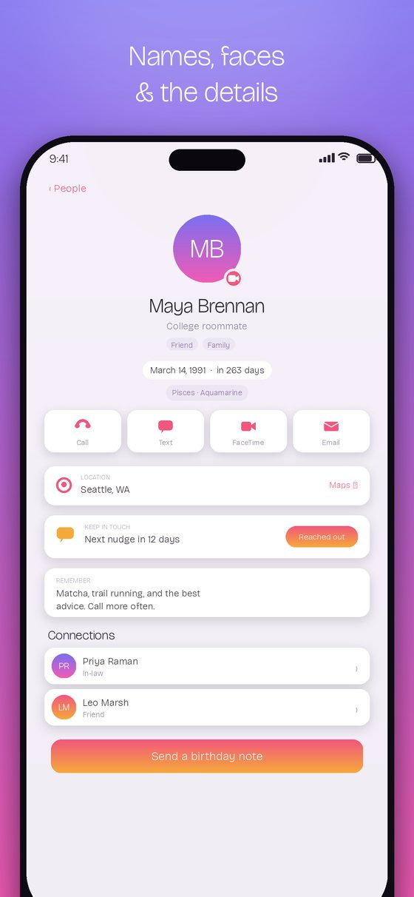
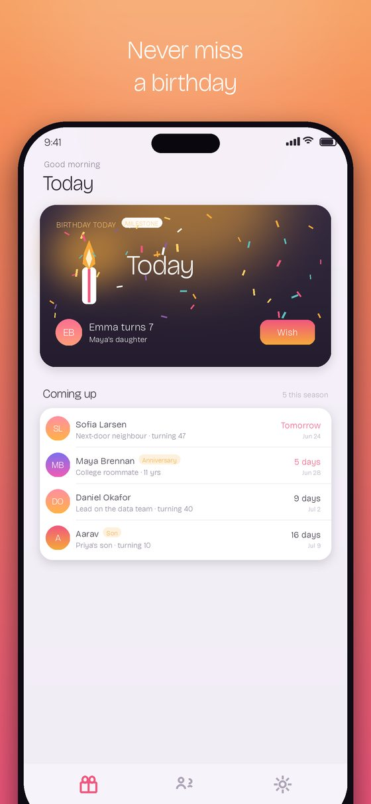
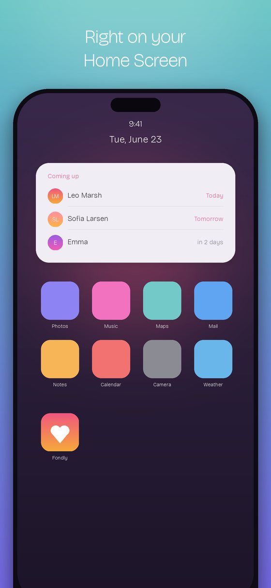

Not just their names - who they are. Fondly is an iOS app with one job: help you remember people.
Download on the App Store For iPhone. No account, no ads, nothing collected.



For years, I wanted a tool that helped me remember people - not just their names, but who they are.
Every person you meet gives you something worth remembering: their name, their kids' names, their interests, the thing they're excited about, the story they told you.
And within a few weeks, most of it is gone.
I recently moved. New street. New neighbours up, down and across the road. My kids' new classmates and their parents. More than a dozen introductions - and nowhere sensible to put any of it.
That's when I realized something most apps miss:
The people we most want to remember are often the people we wouldn't normally connect with online.
A neighbour doesn't need to be a LinkedIn connection. A colleague's kids aren't getting a friend request. Sometimes you simply want to remember their name - and find them later by the hobby they mentioned, the conversation you had, or the dog they were walking when you met.
I tried Notes, OneNote, spreadsheets and a few other ways of keeping track of people. They're built for tasks that happen to mention people.
Not for people.
So I built Fondly. I built it because I wanted this tool myself, and I hope it earns a permanent spot on your phone, too.
- Oleksiy Golovchenko, maker of Fondly
LinkedIn helps you make the connection. Fondly helps you remember what mattered about that person the next time you meet.
It was a tooling problem. Be the person who remembers.
Get Fondly for iPhoneFondly is built by one person, with no investors and no ads. If it has helped you remember someone who matters, you can buy me a coffee.
Crypto donations are handled by NOWPayments. Tips are entirely optional and unlock nothing in the app.